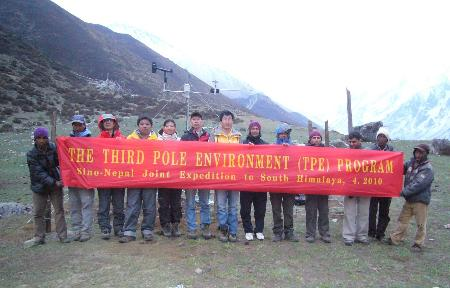
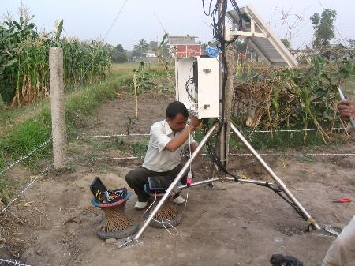
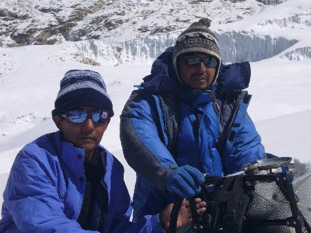
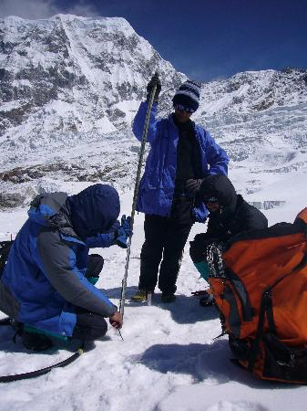

With
the goals of monitoring glacier dynamics and to better understand the paleo-climate and local hydrology,
a joint expedition with scientists from China and Nepal was successfully carried out from April 20–May
11, 2010 on the southern slope of the Himalayas within the Third Pole region. The research expedition
was funded by the Third Pole Environment (TPE) program.
Two
Automatic Weather Stations (AWS) were installed to monitor air temperature, relative humidity,
atmospheric pressure, wind speed and direction, total radiation, as well as the soil temperature and
moisture content. The AWS were installed at Kyanjin Gompa (3900m a.s.l.) within the Langtang Valley, and
at Tarahara (119m a.s.l) within the Koshi Basin on the southern slope of the Nepal Himalaya during the
one month expedition.
Scientists
also succeeded in measuring glacier terminus elevation and peripheral topography using differential GPS
in order to understand rates of glacial retreat, hydrology, and surface level changes during the Yala
trek. A series of line-pods were installed on the Yala glacier to monitor the mass balance and determine
the surface profile and flow velocity. For biological and chemical analysis, surface snow and snowpit
samples were retrieved for subsequent analysis.
To
understand the paleo-environment inferred from the tree rings in the Langtang region, dendro-cores were
also obtained. Tree ring samples were collected from the forest around Kyanjin, Langtang village, and
Lama Hotel. During the expedition, vegetation and soil samples were also collected. Langtang River
runoff was also monitored using tracers’ method. For regular and continuous study of stable isotope
hydrology, scientists chose one fixed site for river water sampling (Langtang River), and two sites
(Kyanjine and Tarahara) for sampling precipitation. Three local people were also appointed for regular
sampling of river water and precipitation in Kyanjin and Tarahara.
This
field research will aid in the evaluation of the relationships between regional climate changes and
long-term mass balance of the glaciers in order to better understand interactions and regional climate
changes within the Third Pole region. The joint research expedition was a continuation of field work
initiated in October, 2009, with support from TPE.
Participants
from China included Prof. Tandong Yao (team leader), Prof. Lide Tian, Prof. Eryuan Liang, Associate
Prof. Yongqin Liu, and Associate Prof. Yu Wusheng, and PhD Candidate Li. Nepalese participants included
Prof. Lochan Prasad Devkota, Associate Prof. Tirtha Adhikari, ITP PhD Scholar Dambaru Ballab
Kattel, Lecturer Binod Dawadi and M.Sc. Student Promos Silwal.

Scientist team at Kyanjine

AWS at Tarahara, Koshi Basin

Working on the glacier

Setting mass balance stakes